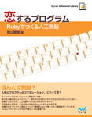
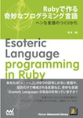

0050 号 巻頭言
Ruby 関連書籍ブックガイド 2015
Rubyist Magazine の記念すべき 50 号をお届けする。
今号は、やまねさんが GDB を使った mruby のデバッガ nomitory のしくみを紹介するmruby 用デバッガ 「nomitory」の作り方、 HTML と Microdata の組み合わせで「Web」と「Web API」を統一する構想とそのための Hypermicrodata gem を紹介するハイパーメディア：RailsでWeb APIをつくるには、これが足りない (Hypermedia: The Missing Element to Building Sustainable Web APIs in Rails)、 「他言語からの訪問」として古川さんが ES2015 とそのトランスパイラである babel について紹介する2015 年の JavaScript と babel の話、 イベントレポートとしてよちよち.rb みんなで LT デビューしよう会 イベントレポート、RegionalRubyKaigi レポート (46) 松江 Ruby 会議 05、RegionalRubyKaigi レポート (47) TokyuRuby 会議 07、RegionalRubyKaigi レポート (48) 渋谷 Ruby 会議 01、RegionalRubyKaigi レポート (49) 神奈川 Ruby 会議 01、 さらに新刊の紹介書籍紹介『Effective Ruby』とそのプレゼント企画である 0050 号 読者プレゼントとなった。
今回は 4 月の年度初めの季節で、新しい環境の方も多いと思われる。 ちょうど私も先日、とあるところで新生活に向けて、 Ruby とは関係ない書籍についてのガイドを作ってみた (http://oss.sios.com/guest-blog/guest-bog-20150318 ) ので、 ここでは Ruby 関連書籍に絞ってブックガイドを紹介してみたい。
このようなブックガイドは、往々にして自分が参考になった書籍を勧めてみたくなるものなのだが、 とりわけコンピュータ書は栄枯盛衰が激しく、 状況の変化を踏まえると私自身や周囲の方々の経験がそのままでは役に立たないことも多い。 そのため、古いめのもの (具体的には Ruby 1.8 以下と Rails 3.0 以下) は 原則として良い本であってもこのガイドからは落としている。
そういう意味では、このガイド自体も賞味期限があまり長くないことが予想されるのだが、 折に触れてこのようなリストをまとめておくと、 将来振り返る際にも時代の雰囲気を味わえて有益なこともあるかもしれない。
初級編


「最初の一冊」を選ぶのは非常に難しい。 そもそも相手によって勧めるものを根本から変えるべきなのだが、 それでも敢えて 2 冊出すとしたら、 『初めての Ruby』と (大変手前味噌ながら)『たのしい Ruby 第 4 版』を挙げたい。
『初めての Ruby』は「わかってる人向けの入門書」という画期的な、今も昔も類書のほとんどないコンセプトによる書籍である。 新しいプログラミング言語を覚える機会は、何もプログラミング未経験者に限られたものではない。 むしろプログラマの方が機会自体は多いかもしれない。 もちろんある程度以上の経験があるプログラマなら入門書なしに自力で何とかすればいいかもしれないが、 不要な無駄を避けて困ることは何もない。 少し古びているところもあるような気がするのだが、最低限の記述に抑えた内容になっているため あまり致命的なところもないだろう。 とはいえ、できれば改訂していただけると個人的にもうれしいので期待している (と yugui さんにエールを贈りたい)。
『たのしい Ruby 第 4 版』については、おかげさまで版を重ねており、 第 4 版ではめでたく Ruby 1.8 以前の記述もばっさり落としている。もっとも、こちらは 『初めての Ruby』とは異なりプログラミング経験が少ない層をターゲットにしているため、 わざわざこのるびまを読まれている読者の方にはいまさら読むまでもないかもしれない。 とはいえ、うっかり Ruby もプログラミングもよく知らないのにこのページを開いている方もいらっしゃるかと思うので、 念の為に挙げておく。


Rails について言うと、いきなり日本語では紙の書籍になっていなくて恐縮だが、 『Ruby on Rails チュートリアル』(http://railstutorial.jp/ ) が真っ先に思いつく。
とりあえず Web でざっと閲覧できるというのは何よりも便利であるし、 内容としても Rails のバージョンアップに合わせて改訂が行われているので安心感もある。 それ以外の書籍でいうと、 『Ruby on Rails 4 アプリケーションプログラミング』 は比較的初心者向けというか、入門書らしい入門書になっている (そこが物足りないという声もありそうだが) のと、 『実践 Ruby on Rails 4 現場のプロから学ぶ本格 Web プログラミング』 はもう少しスキルというか経験のありそうな人を対象としている。
この辺りは、Ruby や Rails そのものの他に、Web アプリケーションプログラミングや Web のしくみについての予備知識によっても難易度が変わってくるし、 また好みもあるかと思うので、読み比べて自分に合いそうなものを選んでいただきたい。

Ruby や Rails そのものに限らず、開発全般についてその心構え的なことを知りたいのであれば、 『たのしい開発 スタートアップ Ruby』がある。
こちらも本文中のコードについては Rails 3.2 がターゲットのため 若干古いところがありそうな気がするが、 むしろ本書の力点はコードではないのでそこはさらっと読み流せば良いだろう。
中・上級編


当初は中級編と上級編について分けるつもりで選んでみたが、明確な線引きの基準を 思いつかず、思案の結果両者をまとめて紹介することにした。
基本的な Ruby の書き方を覚えて、さて実際にある程度のボリュームのコードを書く、という 時に参考になる書籍としては『Effective Ruby』と『パーフェクト Ruby』が挙げられる。 『Effective Ruby』は本号の別記事でも紹介されているが、arton さんの監修も 入って (監訳者による脚注を読んでいるだけでも面白い)、入門書には書かれない Ruby の使いこなしが書いてあって楽しい。 『パーフェクト Ruby』は複数の著者による共著になっていて、様々な角度から Ruby についての 情報を紹介しているのは共著ならではだろう。
Ruby で中・上級編向けとしてはメタプログラミングに触れないわけにはいかないわけで、 そのため『メタプログラミング Ruby』も欠かせないだろう。


いわゆるクックブック系の書籍としては、 『Ruby 逆引きハンドブック』『Ruby レシピブック 第 3 版』『Ruby 逆引きレシピ』などが あるが、もう少し新しめの内容のものがないのはあんまりよろしくない状況ではある。


同時期に翻訳版が出版された書籍に『プログラミング言語 Ruby』があるが、 本書は網羅的で手堅い解説書としては定評がある。 最新版の Ruby との差分については、『Ruby 徹底攻略』なども参考にすると良いかもしれない。 こちらは網羅的ではないが、『パーフェクト Ruby』同様に共著となっており、 読み比べるとたのしい。


やや変わった傾向の書籍としては、 『Ruby 1 はじめてのプログラミング』『Ruby 2 さまざまなデータとアルゴリズム』 『Ruby 3 オブジェクト指向とはじめての設計』のシリーズがある。 こちらは 1 巻目こそ入門書と言えるが、2 巻目以降はかなり手応えがある内容になっているというか、 率直に言ってやさしい本ではない。 が、入門者ではない人であれば、1 巻も含めて通読する価値はあるので、ぜひ試してみていただきたい。


こちらもパーフェクトシリーズの 1 冊だが、 『パーフェクト Ruby on Rails』は Rails 開発のための中級者向けの書籍として参考になる。 Rails の中上級者向けの書籍は海外では『Crafting Rails 4 Applications』なども あるのだが、日本語では本書が貴重な書籍となっている。


Ruby でのプログラミングよりも Ruby 処理系の動作そのものについて興味がある向きには、 『Ruby のしくみ』がある。表題からは RHG こと『Ruby ソースコード完全解説』を彷彿とされる ところもあるが、読み比べると RHG が徹底的に Ruby 処理系のソースコードに向き合い、 「しくみ」を調べるためのコードの読解に終始していたのに対し、 本書は図示や説明を通じてソースコードそのものはあまり見せずに「しくみ」の紹介を 行っている。RHG はオンライン版が公開されている (http://i.loveruby.net/ja/rhg/book/ ) ので、興味のある方はぜひとも読み比べてみることを勧めたい。
その他編


- 
Ruby の周辺に位置する書籍も少し挙げておきたい。
まず、Ruby の応用例についての書籍としては、
『恋するプログラム― Ruby でつくる人工無脳』、
『R と Ruby によるデータ解析入門』、
『Ruby によるクローラー開発技法 』などがある。
これらはそれぞれ、人工無脳・データ解析・クローラーなどを Ruby で開発したい人には重宝するだろう。
なお、『恋するプログラム― Ruby でつくる人工無脳』は一時期入手困難だったのだが、現在は版元サイトより受注生産 (!) で入手できるのと、電子書籍でも入手できるようになっている。https://book.mynavi.jp/ec/products/detail/id=33771
—-

応用とはちょっと違った形になるが、Ruby を通してコンピュータ・サイエンスを学ぶ 『アンダースタンディング コンピュテーション―単純な機械から不可能なプログラムまで』 がある。本書は0048にてすでに紹介済み (書籍紹介『アンダースタンディング コンピュテーション――単純な機械から不可能なプログラムまで』) なので るびま読者であればご存知の方も多いだろう。 実際に動かしながら試すことに重きを置いているコンピュータ・サイエンスの本はめずらしい、という意味でも興味深い一冊になっている。

さらに、入門書には違いないが、ターゲットが特殊な書籍としては 『小学生から楽しむ Ruby プログラミング』がある。 これはあくまで小学生向けということで、大人が読むには不満が残りそうだが、 どちらかというとこれは人に勧めることが期待されている書籍だろう。


また、Ruby ではなく Ruby 作者のまつもとさんが気になる方にとっては、 『まつもとゆきひろ コードの世界』『まつもとゆきひろ コードの未来』は 必読だろう。さらに、まつもとさんが監修された 『角川インターネット講座 2 ネットを支えるオープンソース ソフトウェアの進化』 も合わせて読んでおきたい。
: 
最後に、Ruby そのものではなく、Ruby で (変わった) 言語を作るための書籍として、 『Ruby で作る奇妙なプログラミング言語』を挙げておく。 本書は『恋するプログラム』同様、一部の方々には大変評判が良かったが、しばらく入手困難になり、現在は受注生産と電子書籍版がある。 https://book.mynavi.jp/ec/products/detail/id=24268

以上、ざっと紹介してきた。個人的には初期の Ruby を支えた Dave Thomas and Andy Hunt による最新版、 『Programming Ruby 1.9 & 2.0』が翻訳されていないため紹介できなかったのが残念だが、 洋書を含めると手に余るのでこのくらいにしておく。 読んだことのないけれど興味を引いた書籍があれば、この機会に紐解いてみることをお勧めしたい。
(るびま編集長 高橋征義)